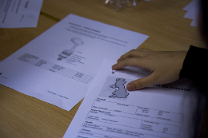
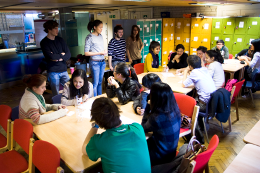
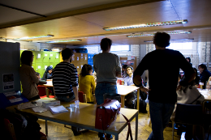
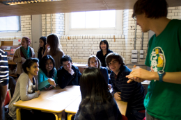

OUR GOAL
Our goal at EWB-UCL is to give you the opportunity to invest your interest in engineering towards the sustainable development of many communities in need around the world. It is a great opportunity for you to network in a society with members of different academic statuses from a variety of departments at UCL. In addition, you will be able to attend many events with interesting speakers from organisations such as the Red Cross, Oxfam, and the European Commission for Sustainable Development. You will also have the opportunity to participate in workshops and courses that will be held in cooperation with EWB-UK and Imperial College London.

THINGS WE DO



We are all about gaining experience and using our engineering backgrounds to help those around us. In the summer of 2012, three teams were sent to Brazil, Nepal and Peru to undertake a project. The following account is about Kalsey and Massimiliano who had the fantastic opportunity to go to Brazil.
The team headed out to their Aquaculture project in the poor 'favela type' community 'Jardim de Gonzaga' which was located on the outskirts of the city of Sao Carlos in Sao Paulo, Brazil. They worked closely with the NGO, 'Terra A Terra Arquitetura' which is actively involved in numerous regional projects to aid communities that lack basic amenities such as electricity and water. They were greeted by the representative 'Tiliano' who is described as 'genuine, warm, hospitable and determined.'
The members of the project worked closely with the community to create a self-sustainable rural aquaculture system, they aimed to achieve: a rain collection area, instigate a conveyance system of canals and waterfalls to deliver the rainwater to designated areas, bio-filtration boxes for water purification, an area for primary storage for the collected water and pumps to deliver this water, and fish tanks to promote farming at home.
The team had embarked on challenges such as not being granted the agreed amount of land allocated for their project, or their supplies being damaged as the lorry delivering the goods had been in an accident. However the warm Brazilian culture shined through when Tiliano and the community brainstormed with the team in order to come up with a solution together.